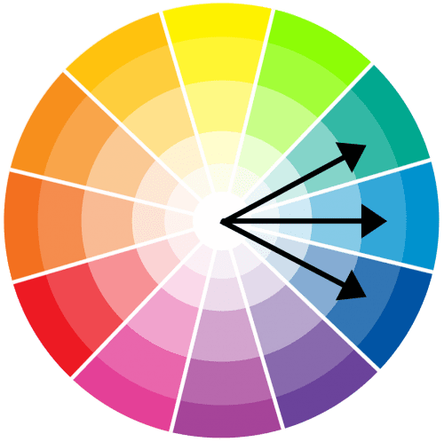

A paleta de cores é um componente central da identidade visual e da usabilidade da interface. Sua escolha ultrapassa a estética, sendo uma decisão estratégica para reforçar a marca e guiar a atenção do usuário. Na prática, isso resulta em uma hierarquia visual clara, onde cores de destaque são usadas em botões e links importantes, e o contraste adequado garante a legibilidade, tornando a experiência acessível e intuitiva. Assim como a UX, a interface de usuário também pode seguir outros caminhos dependendo do objetivo da página.

Paleta de cores